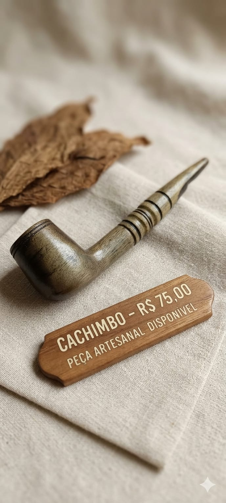
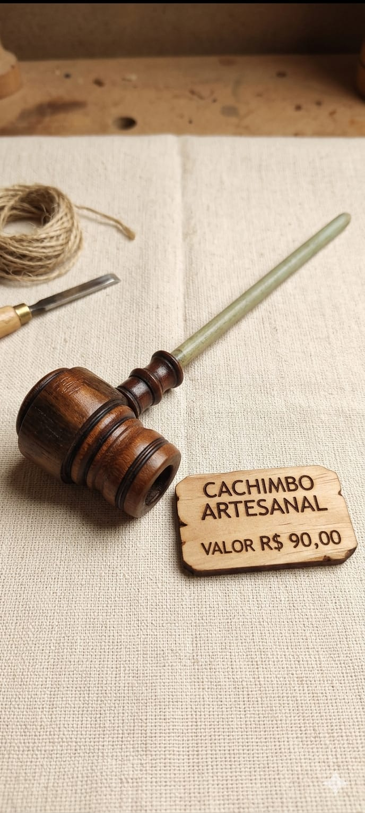
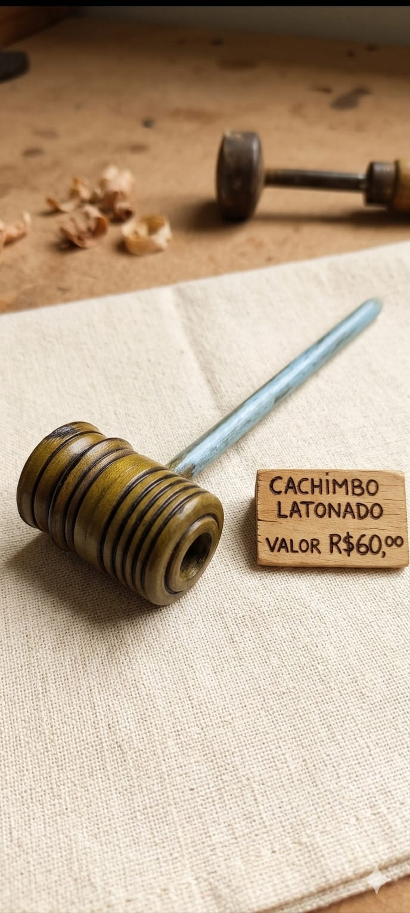
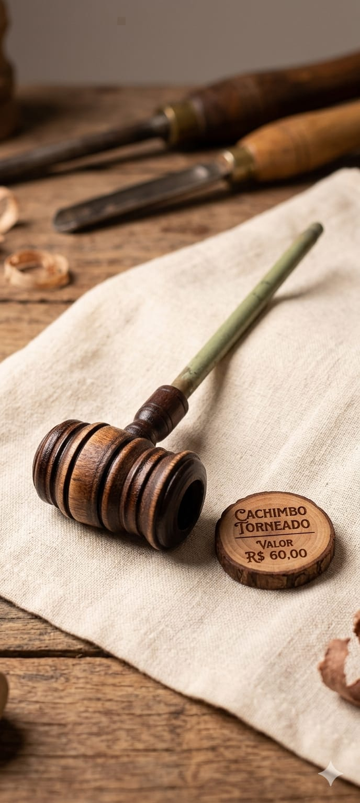
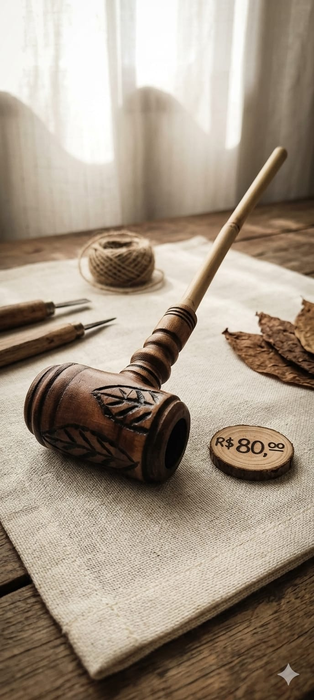
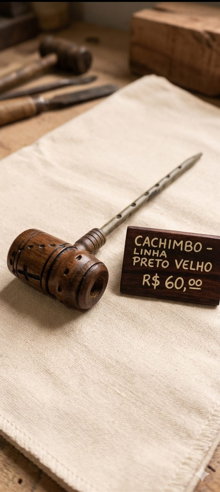

PORTIFOLIO
Nossos produtos: Cachimbos Raimundão da Jurema - Tradição e qualidade em cada peça.

Cachimbo Tradicional
Design clássico com madeira nobre, perfeito para cerimônias tradicionais.

Cachimbo Exclusivo
Peça única com detalhes artesanais e acabamento premium.

Cachimbo Cerimonial
Ideal para rituais especiais, com simbologia sagrada.

Cachimbo Master
Obra-prima artesanal, com detalhes exclusivos.

Cachimbo Espiritual
Conexão profunda com as tradições espirituais.

Cachimbo Premium
Qualidade superior, madeira selecionada e acabamento perfeito.